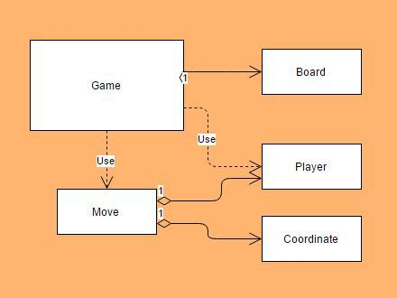
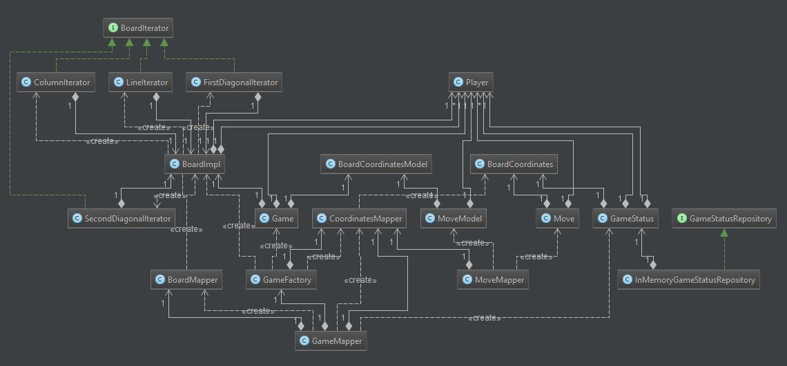
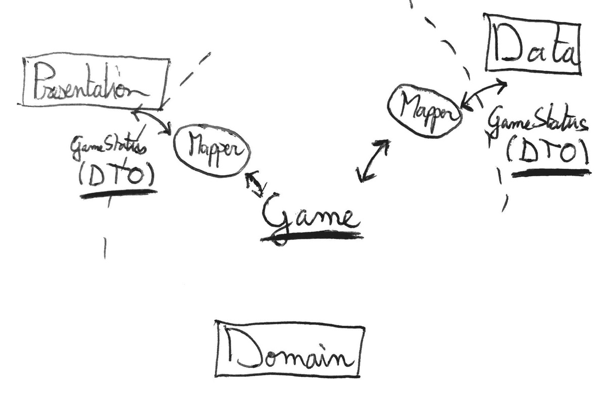
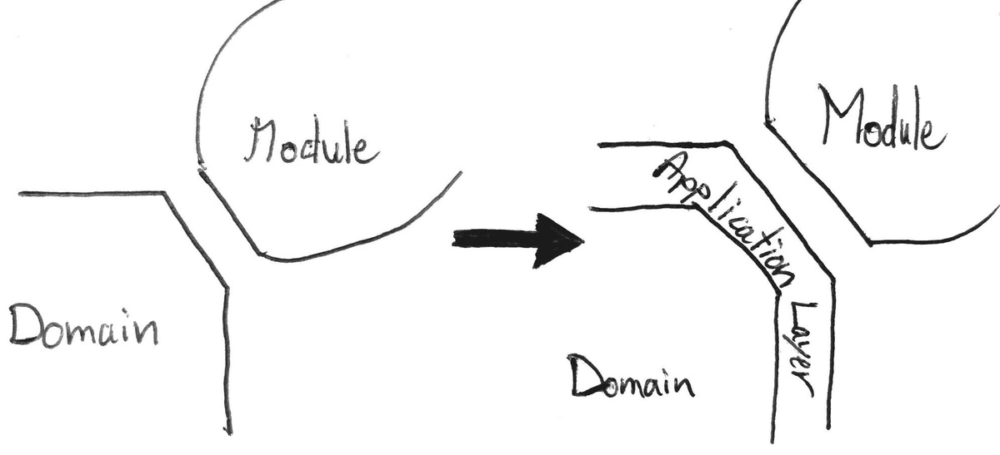

Hexagonal Android - Part 3: Crossing Boundaries
6 min read - May 22nd, 2016
Update
After month of research, study and trial and error, I finally have a much clearer vision on modular architectures. I invite you to discover the result of my research in the following article:
Feel free to continue reading this article, as it goes a bit more in-depth on certain aspects.
I used a slightly different, more refined vocabulary in the article about My Java Archetype. To make the transitions as easy as possible between the two articles, here are the equivalent definitions.
Hexagonal Series My Java Archetype Use-case Application Service Driving Adapter Application Service Port Contract (Interface layer) Driven Adatper Contract Implementation
In the previous article I presented an overview of the basic principle behind the Hexagonal Architecture.
To me, that’s all there is to it for the moment. Of course, I might have oversimplified, but it’s a good start to get a grasp at how to organize software to respect this style of architecture.
Now let’s take a deeper look at our domain in the context of the TicTac app.
This post is part of a series of post where I try my best at implementing the Hexagonal Architecture in an Android application.
You can also check out the other parts:
The whole code for the application is available at:
This series is not meant to be a complete introduction to the Hexagonal architecture, for more information check these links :
- Alistair Cockburn’s original Hexagonal Architecture
- Fideloper’s talk on Hexagonal Architecture
- Uncle Bob’s Clean architecture
Moreover this project is very similar to the one of Fernando Cejas
##Domain in the TicTacToe App
After few iterations of Test Driven Developement the resulting domain looked like this.

- The Game: the centerpiece of the domain. Where all the moves are played
- The Board: Add moves to the Board, and validates them beforehand. Also provide iterators to iterate through column, row, diagonals.
- The Coordinate: Represents and validates coordinates
- The Move: Represents and validate move
- The Player: Represents and validate a player
So far nothing really complicated. Our domain is composed of fairly simple elements that go together in quite a simple manner.
At this point I thought I could just:
- Create an instance of the Game object in the Activity
- Use it to keep the state of the game
- Create new moves and player.
Basically exposing all the components of domain to the presentation layer.
Doing this I would respect the principles of the hexagonal architecture right?
- All logic processing would be done with domain objects.
- There is no android dependency in the domain, as a matter of fact there is no external dependency at all in the domain.
Yet that just didn’t quite felt right!
All this decoupling work to now use the domain as if it were only from a different package. Sure we’ve achieved the greater goal: All the logic of our application is now well tested. But yeah something just did not feel right, not enough separation of concerns to my taste.
##Crossing boundaries So I did my research and started to try and understand what should really be at this boundary. And what kind of objects should cross the boundary.
Turns out this was the source of a big headache and a good conversation with a fellow craftsman.
Since I’m not 100% sure that the solution I decided to adopt in the end is the definite right one: this whole section deserved it’s own Open-Article, which you can find here: The DTO dilemma
But for now let’s assume I did pick the right solution after all.
The bottom line is: Only DTOs should be allowed to cross the Border. With that in mind our simple model changed . . . just a tiny bit.

Yes, the picture is intentionally un-readable, but the point is it gets way more complex, at least in appearence. I am not going to go over the whole process here. Check the previously mentionned article for that. But the basic idea is:
######When creating a new Game:
- A new Game is Created from the game Factory
- This game is mapped to a GameStatus by the GameMapper
- The GameStatus is stored in a Repository, an id is returned
- The Id is used to access the Game
######When adding a move to the new Game:
- A GameStatus is retrieved from the Repository with the Id generated at the initialization
- The GameStatus is mapped to a Game by the GameMapper
- A Move is played on the Game
- The updated Game is Mapped again to a GameStatus
- The GameStatus is stored in the Repository using the same Id
- The same GameStatus is used to display the informations of the Game.
Well that does sound a lot more complicated than just creating an instance of the game. But is it really ? Sure it doesn’t look obvious, but if we decompose the steps is it really complicated, or just . . . complex? When I think about it: It all boils down to a complex sequence of fairly simple operations.
The point is that now domain objects do not cross the domain’s boundaries anymore.

###Keep It Simple, Stupid
Now we have a wonderful domain API with only Factories, Repositories and DTO crossing the border. A bit better in terms of separation of concerns, but still not entirely satisfying when it comes to encapsulation.
As a user [of the domain] I do not want to be polluted with persistence concern.
Plus if we were to actually execute the processes described above in the Activity (Presentation layer object): We’d have the same problem as before. The presentation layer would have access to the core objects of the domain (Game, Board, etc).
To solve both the problem of objects ownership, and simplify the domain API, another layer is introduced. It sits just at the border. It is the Application Layer.
Note: As of today this is my first project with a clear separation of the domain. I have yet to explore the proper way to code the domain. So, I have at the moment no idea about entities, services, and other domain-related concepts. I am after all the Professional Beginner ;) (And yes Domain Driven Desing by Eric Evans is already on my bookshelf)
##The application layer
The Application Layer is just at the border between the domain and its consumer. That’s where the driving adapters belong. That’s also where I decided to put the interfaces for the driven adapters.

Its role is to use objects of the domain to create an easy to use interface for the consumer.
I’m sure there are multiple ways to approach this particular layer of our application. But as a matter of personal preference, I decided to focus on an implementation that is my interpretation of a concept made popular by Robert C Martin, and originally presented by Ivar Jacobson : A Use-case driven approach.
###Use-case approach
The idea as presented in this blog post and this talk by Uncle’s Bob, is to have a couple of Interactors taking care of the orchestration of operations in the domain to realize a specific use-case.
And That is what I have been looking for the better part of this article.
In the TicTacToe project these Interactors are called (something)UseCase but the idea remains the same.
For every action on the domain, a specific object is created whose one and only task is to execute this very action. For the TicTacToe application there is 2 UseCases: InitNewGameUseCase, and AddMoveUseCase
They are the perfect answer to what I was looking for because:
- They orchestrate objects of the domain to create a seamless API
- Allows the modules to communicate using only through DTO
- They still belong to the domain
From now on, whenever a new game needs to be created, or a move needs to be added. The interaction is reduced to a single call to a UseCase Object.
######When creating a new Game:
- Call the execute method of the InitNewGameUseCase
- The ID necessary to take further actions on the game is retrieved through a callback previously provided to the use-case.
######When adding a move to the new Game:
- Create a new Move
- Pass it to AddMoveUseCase
The AddMoveUseCase takes care of fetching the correct GameStatus from the repository, do the mapping, execute the move, re-maps the Game to a GameStatus and returns it to the consumer through a callback previously provided.
##Conclusion
Oddly what took me quite some time to wrap my head around how use-cases could be represented as concrete classes. To be honest I’m still skeptical that the way I handled things for this TicTacToe project is the absolute correct way. I guess it’ll either become more obvious with time, or I’ll update this article once I have a deeper understanding of the Application layer. About this very problem, thanks again to Fernando Cejas for making it real clear how use cases could be represented.
This part was the trickiest for me to implement but here’s what I learned:
- Only DTO should cross the boundaries between layers (after dependencies injected)
- There is an extra layer surrounding the domain whose role is to orchestrate operations on the Domain
- Implementing real use-cases as concrete classes, streamlines the domain interface and allows standardized communications
As mentioned this section is the one that gave me the most headaches. So if you have any comments that could help me understand better that part, I’d love to hear from you. Same goes if you liked this article ;)
— The Professional Beginner